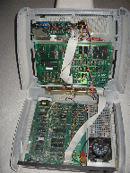

PET index - 8x96
The 8096 basically is an 8032 with a 64k expansion board. Later Commodore redesigned the 8032 board to include the 64k expansion board by using complete 128k of RAM! The 8296 were sold in the slick separate keyboard cases, and the top models had a 8250 disk drive builtin. In this document you find:
- General memory mapping info for both machines, 8096 and 8296
- General Info about the 8296
- 8296-D Information
- Original Docs and LOS-96 Operating System
- Further links
8x96 memory mapping
The 64k RAM of the 8096 can replace the upper 32k address range. The mapping is best depicted with this table (from the 8296 supplement to the 8032 manual):
0 +----------------+ 0000
| |
| |
| |
| |
| |
| |
| |
| |
16K +----------------+ 4000
| |
| |
| |
| |
| |
| |
| |
| |
32K +----------------+ 8000 ............. +--------------+ +--------------+
| Screen | | | | |
+----------------+ 9000 | | | |
| | ADDRESSES | BLOCK 0 | | BLOCK 1 |
| | 8000 TO BFFF | 16K | | 16K |
| | (32K TO 48K) | | | |
| | | | | |
| | BFFF | | | |
48K +----------------+ C000 ............. +--------------+ +--------------+
| | | | | |
+----------------+ | | | |
| | ADDRESSES | BLOCK 2 | | BLOCK 3 |
58K +----------------+ C000 TO FFFF | 16K | | 16K |
| | E800 (48K TO 64K) | | | |
60K |......I/O.......| F000 | | | |
| | FFFF | | | |
64K +----------------+ +--------------+ +--------------+
Figure 2-1. Expansion memory mapping
In the 8096 the left memory map is exactly the PET 8032 memory map. (The 8296 is different, but for this see below). The mapping is controlled by a write-only register at $fff0:
Figure 2-2 depicts the functions of the memory control register.
The paragraphs following it describe these functions in detail.
Address $FFF0
---------------------------------------------------
7 6 5 4 3 2 1 0
---------------------------------------------------
| | | | | |
| | | | | |
Enable --+ | | | | +-- Write Protect
| | | | $8000 - $BFFF
| | | |
I/O peek through+ | | Select +--------- Write Protect
$E800-$EFFF | | 16K $C000 - $FFFF
| | Block: 0 0: 2 and 0
Screen peek through ---+ | 0 1: 2 and 1
$8000-$8FFF | 1 0: 3 and 0
| 1 1: 3 and 1
Reserved ---------------------+
Figure 2-2.
Expansion Memory
Control Register
Control Register Bit 7 - When equal to 1, enables the expansion memory.
When bit 7 equal to 0, expansion memory is disabled. Bit 7 defaults to 0
on power up.
Control Register Bit 6 - When equal to 1, I/O peek through is enabled.
Control Register Bit 5 - When equal to 1, screen peek through is enabled.
Control Register Bit 4 - Reserved.
Control Register Bit 3 - When equal to 1, block 3 (16k-byte) is selected.
When equal to 0, block 2 (16k-byte) is selected.
Control Register Bit 2 - When equal to 1, block 1 (16k-byte) is selected.
When equal to 0, block 0 (16k-byte) is selected.
Control Register Bit 1 - When equal to 1, addresses $C000 through $FFFF
on the /Expansion Memory Board only/ are write protected.
I/O is not write protected if I/O peek through is enabled.
When equal to 0, the addresses are not write protected.
Control Register Bit 0 - When equal to 1, addresses $8000 through $BFFF
on the /Expansion Memory Board only/ are write protected.
The screen is not write protected if screen peek through is enabled.
When equal to 0, the addresses are not write protected.
8296 Information
The 8296 is a complete redesign of the PET universal board. It fits into the separate keyboard case, and directly holds 128k RAM, of which 96k can be used as in the 8096. In addition, using "user jumpers" on the motherboard, the ROM can be completely switched off to access the RAM "under the ROM", so that the complete 128k RAM are accessible. The "user jumpers" could be set to connect to the userport, so this could even be done under program control.
For the other features of the 8296, please have a look at the 8296 supplement to the 8032 manual.
The 8296 uses three PLAs to reduce the number of logic chips considerably. The PLAs have been read out and the equations have been reverse engineered. You can find the description in 8296desc.txt and the images and equations in 8296desc3.tar.gz.
More info can also be found in the 8296 firmware page on the CBM archive.
The CRTC page contains a block schematics on how the video circuitry works, that also shows how the memory is used.
8296-D
The 8296-D is a 8296 that also includes a 8250-LP disk drive in a single case. The disk drive is attached to the upper part of the case, underneath the monitor. Both, the computer and the drive share the same power supply. The board is thus not equipped with an own voltage regulator etc as is the 8296 (without drive).

|  |
{kind=link}
Orignal Docs and LOS-96
There are some original documents available in electronic form (of course always looking for more):
- CBM 8296 Supplement to the 8032 manuals
- CBM released a LOS-96 (Loadable Operating System for the 8x96) that actually is an improved basic. There is some german documentation in Los96-de.html and LosKit-de.html. The LOS-96 software can be found in los96-disk.tar.gz which is the same as on the CBM archive, but includes a VICE PET emulator .x64 disk image with the stuff.
More links
- PLA replacement with an EPROM (German).
Back to the PET index
PET index V1.0 (c) 1999-2005 A. Fachat